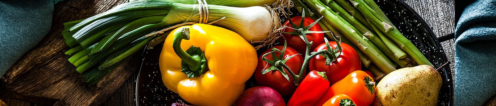

In the preamble to the Food Safety and Standards Act, 2006, the Food Safety and Standards Authority of India (FSSAI) is expected to ensure availability of safe and wholesome food for the people in India. Therefore, FSSAI has embarked on a large-scale effort to transform the country.
Twitter Ads info and privacyTweets by @fssaiindia FSSAI ✔ @fssaiindia 09 days left until registration closes. Last day of registration for Eat Right Research Awards and Grant is 2nd December,2021. Register Now! To register visit: http://www.eatrightindia.gov.in/researchawardandgrant …@MIB_India @MoHFW_INDIA @AmritMahotsav @mygovindia View image on TwitterNov 23, 2021 FSSAI Retweeted Ministry of Health ✔ @MoHFW_INDIA Today's stall in focus - Food safety and Standards Authority of India at @MoHFW_INDIA pavilion, Hall No. 11, Pragati Maidan. Do visit and learn about the Eat Right India initiative View image on TwitterView image on TwitterNov 22, 2021 FSSAI ✔ @fssaiindia 10 days left until registration closes. Last day of registration for Eat Right Research Awards and Grant is 2nd December,2021. Register Now! To register visit: http://www.eatrightindia.gov.in/researchawardandgrant …@MIB_India @MoHFW_INDIA @AmritMahotsav @mygovindia View image on TwitterNov 22, 2021 FSSAI ✔ @fssaiindia Try this healthy and delicious Barnyard Millet Choco Beetroot and Carrot Cake Recipe.#EatRightIndia#RecipeRavivaar@MIB_India @MoHFW_INDIA @mygovindia @AmritMahotsav View image on TwitterView image on TwitterNov 21, 2021 FSSAI ✔ @fssaiindia Detecting Rhodamine adulteration in Ragi#DetectingFoodAdulterants_14#AzadiKaAmritMahotsav@jagograhakjago @mygovindia @MIB_India @PIB_India @MoHFW_INDIA Embedded videoNov 18, 2021 FSSAI Retweeted KANT ADESHWAR @KAdeshwar Today on 16/11/2021, An Awareness Program on RUCO was organised in Gole Market Area in New Delhi wherein FBOs were briefed on various aspects of Food Safety and RUCO initiative by Ms. Neha Bansal, CommissionerFoodsafety, Delhi. @foodsafetydelhi @NehaBansal31 @fssaiindia View image on TwitterNov 16, 2021 FSSAI Retweeted Rourkela Municipal Corporation ✔ @RourkelaMC Tarini Mata Mandir at Panposh Rourkela has been awarded @fssaiindia BHOG (Blissful Hygienic Offering to God) Certificate for maintaining hygiene and purity. This certificate is awarded as part of Eat Smart City Challenge. @CMO_Odisha @Culturedeptt @MinOfCultureGoI @HUDDeptOdisha View image on TwitterNov 16, 2021 FSSAI ✔ @fssaiindia Do visit our @fssaiindia stall at #InternationalTradeFair2021, #MinistryofHealthandFamilyWelfare Pavilion, Hall No.11, Stall No.7,8.#IITF2021 #FoSTac #FoSCoS@mygovindia @MoHFW_INDIA @MIB_India @AmritMahotsav View image on TwitterNov 16, 2021 FSSAI ✔ @fssaiindia Try this quick and easy Barnyard Millet Dumplings recipe.#RecipeRavivaar#EatRightIndia@MIB_India @mygovindia @MoHFW_INDIA View image on TwitterView image on TwitterNov 14, 2021 FSSAI ✔ @fssaiindia This #WorldDiabetesDay let us pledge to reduce high intake of sugar in our daily diet.#AajSeThodaKam@MoHFW_INDIA @MIB_India @mygovindia @AmritMahotsav View image on TwitterNov 14, 2021 FSSAI ✔ @fssaiindia Last day of registration for Eat Right Research Awards and Grant is 2nd December,2021. To register visit: http://www.eatrightindia.gov.in/researchawardandgrant …@MIB_India @MoHFW_INDIA @AmritMahotsav @mygovindia View image on TwitterNov 11, 2021 FSSAI ✔ @fssaiindia Detecting Sugar adulteration with Urea#DetectingFoodAdulterants_13#AzadiKaAmritMahotsav@jagograhakjago @mygovindia @MIB_India @PIB_India @MoHFW_INDIA Embedded videoNov 9, 2021 FSSAI ✔ @fssaiindia Interactive session with @Ramesh_ChandDr @davidnabarro and Ms Rita Teaotia CP @fssaiindia Date:10th November,2021 Time: 3pm to 4:05pm Click on the below link to join the webinar:https://mohua-iuo.webex.com/mohua-iuo/j.php?MTID=m18e8bd80781bcf71d21d13dbaa4cec47 …#EatSmartCities#FoodFoundation@mygovindia @MoHFW_INDIA @MoHUA_India View image on TwitterNov 8, 2021 FSSAI ✔ @fssaiindia Try this innovative Stewed Pumpkin Samak Rice Recipe today!#EatRightIndia#RecipeRavivaar@MoHFW_INDIA @mygovindia @MIB_India View image on TwitterView image on TwitterNov 7, 2021 FSSAI ✔ @fssaiindia This year for the festivals let’s go poora healthy.#HappyDiwali #EatRightIndia@mygovindia @MoHFW_INDIA @MIB_India @AmritMahotsav View image on TwitterNov 4, 2021 FSSAI Retweeted Food Fortification Resource Centre @ffrc_fssai What is fortification?#Fortificationquiz @fssaiindia@tatatrusts#EatRightEatFortified#Fortification#PlusF View image on TwitterNov 3, 2021 FSSAI ✔ @fssaiindia FBO meeting at Diskit,Nubra Valley where Chairperson and CEO @fssaiindia interacted with local FBOs and addressed their concerns.#Fostac#EatRightIndia@FoodLadakh@MIB_India @MoHFW_INDIA @AmritMahotsav View image on TwitterView image on TwitterView image on TwitterNov 1, 2021 FSSAI ✔ @fssaiindia Try this easiest fluffiest healthy Buckwheat Flour Cookie/Biscuit recipe.#RecipeRavivaar#EatRightIndia@MIB_India @MoHFW_INDIA @mygovindia @AmritMahotsav View image on TwitterView image on TwitterOct 31, 2021 FSSAI ✔ @fssaiindia Submit dessert/sweet beverage recipes with no added refined or artificial sweeteners. Top 150 participants stands a chance to win a cash prize of Rs 2500 each. To participate click on the below form:https://forms.gle/gmkbsXWJFXR2cfoS7 …#NaturesSweetnessinEveryBite#EatRightIndia View image on TwitterOct 28, 2021 FSSAI ✔ @fssaiindia Academia and Research Organizations can apply for Eat Right Grant and 9 winning entries can get grant of Rs 50 Lakhs each. For more details visit:http://www.eatrightindia.gov.in/researchawardandgrant …#EatRightResearchAwardsandGrant@MIB_India @MoHFW_INDIA @AmritMahotsav View image on TwitterOct 28, 2021 Load more Tweets EmbedView on Twitter
The Food Safety and Standards Authority of India (FSSAI) has been established under Food Safety and Standards , 2006 which consolidates various acts & orders that have hitherto handled food related issues in various Ministries and Departments. FSSAI has been created for laying down science based standards for articles of food and to regulate their manufacture, storage, distribution, sale and import to ensure availability of safe and wholesome food for human
FDA Bhawan near Bal Bhavan,Kotla Road, New Delhi - 110002 India.
E-Mail Us: eatrightindia@gmail.com
Call Us: +011-23220994